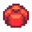

Vorlage:Mainmenu
Zur Navigation springen
Zur Suche springen
Details zur Vorlage finden Sie auf der englischsprachigen Dokumentationsseite.
Verwendung
Diese Vorlage kann verwendet werden, indem Sie auf eine relevante Seite folgendes eingeben.
{{Mainmenu}}
Ergibt...
| Grundlagen | Der Bauernhof | Umwelt | Spiel |
|---|---|---|---|
|
 Bündel |
|||
| Artikel | |||
| Das Tal | Jenseits das Tal | ||